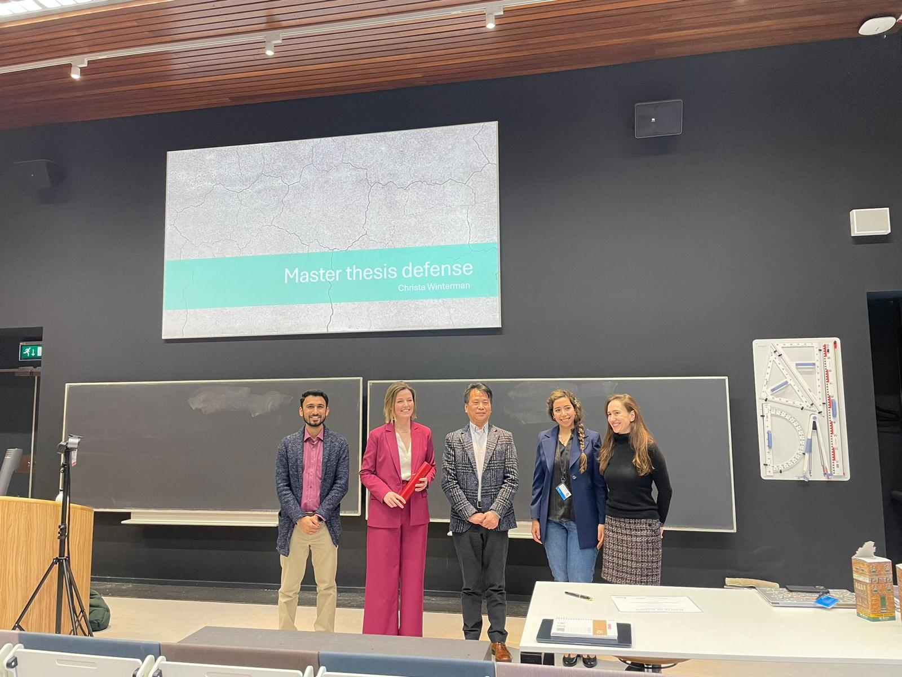

Student supervision
Master's students
- Christa Winterman – Master Thesis, 2025
Understanding the Mechanism of Drying Shrinkage in Alkali-Activated Binders
- Ahmed Farahat – Master Thesis, 2025
Investigating the Carbonation Properties of One-Part Geopolymer (slag and bio-mass ash)

Christa
Bachelor's students
- Kafei Chan – Bachelor Thesis, 2023
Carbonation of Slag-Based Geopolymers: Evaluating the Effect on Mechanical Properties and the Potential of Self-Healing
- Sofia Sakhi – Bachelor Thesis, 2023
Interaction of CO2 with C-A-S-H gel in slag-based geopolymer concrete
Teaching Experience
- Structural analysis, Structure analysis (Lab.) – July 2017-May 2018 - Undergraduate course at IIT Delhi
- Design of Steel Structures, Drawing and detailing of Steel Structures – July 2016-May 2017 - Undergraduate course at IIT BHU Varanasi
- Multiscale modeling in Concrete technology – Winter Semester 2025/26